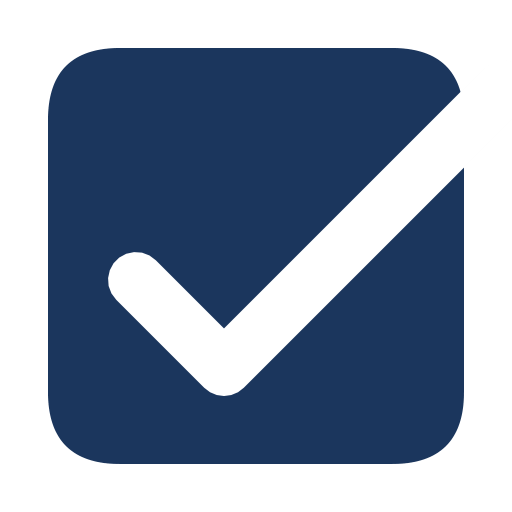

AdmisiblePreparación de ofertas para SICOP Agendar 20 minutosRevisamos todas las licitaciones en las que su empresa puede participar, le decimos cuáles vale la pena y le entregamos la oferta completa, a tiempo y admisible. Usted decide el precio y firma.
Para empresas que ya le venden al Estado y quieren vender más sin agrandar la planilla.
Hoy
Una página, con datos públicos de SICOP, hecha para su empresa. Es el mismo informe con el que empezamos a trabajar con cada cliente. Léalo y decida si vale la pena hablar.
Antes de la apertura
Tres cosas, medibles en su propio SICOP a los tres meses.
Cada requisito del cartel, quién lo emite y para cuándo, resuelto antes de la apertura. Las prevenciones de subsanación se contestan el mismo día.
Todas las semanas recibe los que puede ganar, con el precio al que se adjudicó la vez anterior y contra cuántos compitió el ganador.
La oferta llega armada y cargada en SICOP. Su equipo pone el precio, revisa y firma. Nada más.
Un concurso real, ya resuelto. La columna de la derecha muestra cuántas ofertas quedaron fuera por cada requisito. Ese es el tipo de detalle que decide una adjudicación.
Estudio de admisibilidad
Datos públicos de SICOP: 3.141 concursos resueltos en Costa Rica entre setiembre de 2024 y agosto de 2026. Analizamos el resultado de cada oferta presentada en esos concursos. Las cifras son públicas; ordenarlas y usarlas a favor de su empresa es lo que nadie hace.
Antes del próximo cartel
Por oferta o por mes. Sin permanencia. Escoja el próximo concurso que le interese y se lo entregamos listo para firmar. Si quiere seguir, pasamos a un plan mensual con todo el radar. Sin cotizaciones largas ni contratos de un año.
Garantía: si no es admisible, no se cobra.
La garantía dice lo que dice: si una oferta que preparamos queda inadmisible por un requisito que estaba escrito en el cartel, ese expediente no se cobra. Ganar depende de su precio y de su producto; eso no lo prometemos.
Esta semana
Hablemos de su próximo cartel. Le enseñamos cómo quedaría su oferta en un cartel abierto esta semana. Si le sirve, lo preparamos. Si no, se lleva la matriz de todos modos.
Admisible es una firma costarricense. Respondemos directamente, en horario hábil.
Correoalfaroluisdiego@admisible.com
Teléfono y WhatsApp8668 9746
HorarioLunes a viernes, 7:00 a 18:00